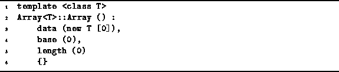

Data Structures and Algorithms
with Object-Oriented Design Patterns in C++
Data Structures and Algorithms
with Object-Oriented Design Patterns in C++
The default constructor
for an object of class T is the function T::T().
I.e., it is the constructor which takes no arguments.
The definition of the Array<T> default destructor
is given in Program  .
The default constructor allocates a zero-length array
of elements of type T
and sets the fields base and length to zero.
Clearly, the running time of this routine is O(1).
.
The default constructor allocates a zero-length array
of elements of type T
and sets the fields base and length to zero.
Clearly, the running time of this routine is O(1).

Program: Array<T> Class Default Constructor Definition
 Copyright © 1997 by Bruno R. Preiss, P.Eng. All rights reserved.
Copyright © 1997 by Bruno R. Preiss, P.Eng. All rights reserved.